Concept sketches for Atlas. They will be wearing a collar with a small crystal attached to it. I want to incorporate
the crystal into the gameplay somehow.
Storyboards for the opening cut scene of the game.
Main garden area concept sketch. This also includes some interaction notes and the color palette.
WEEK 1
Art & Animation
Before I could do any animation, I needed references. Natural movement and fluidity are very important as so the movement does not look stiff
or weird. I reached out to a close friend of mine, El Jors, who has a black Newfoundland and asked for video references for various
motions including: running, walking, jumping, sitting, laying down. I took the videos and split them up into individual
frames to use as direct references for animation.
Music
HamRum is one of my closest friends and she offered to produce the music for Monody. We worked in tangent with each other. She completed
temp music for the menu screen of Monody.
Unity
I accomplished more in Unity than expected this week. I set up some basic movement controls (left, right, jump) and imported some assets
for testing. I began brainstorming ideas for the tutorial level and opening puzzle for the game.
Brainstorm page for the tutorial level of Monody
WEEK 2
Weekly Goals
Create menu screen
Brainstorm grief narrative
Complete opening cutscene animatic
Complete Atlas walk animatic
Create backgroudn art sketches for cutscene
I accomplished almost everything I wanted to this week. Unfortunately, I was not able to complete all the sketches for the cutscene that I wanted.
I always keep the feedback I receive in mind when I am working on my project.
I learned a lot about Unity this week and I also found some new resources/programs that I could potentially use for my project.
Storytelling & Writing
Art & Animation
Sketch of the town backround art for the opening cutscene
Video of Atlas' walk animation, iteration 1.
Animatic for the opening cutscene.
Music
Main Theme Temp Music
Cutscene Iteration 0
Unity
Video of a working menu screen and movement controls in Unity.
WEEK 3
Weekly Goals
Complete background art sketches, start painting
Map out the tutorial level in Unity
Begin creating necessary assets for gameplay (Watering can, plants)
Make menu screen look nice
Start cleaning up animations
Create animatic for jumping movement
Time is a very valuable resource for me this semester, and unfortunately I lost a lot of it from visiting my parents over the weekend.
I made progress on the background art. Unfortunately, I was not able to do as much as I would have liked with the animation because I had to
overhaul my animatic twice this week. Fortunately, however, I created a jumping animation, updated the menu screen in Unity, and worked
out the exact size of my tutorial level for the game. I also started working on the background art for the tutorial level. I collected resources
and references for assets I need for my game.
HX Testing Round I
For round 1 of the HX Testing, I approached people that I planned to get feedback from with information about the current state of my story and animatic.
Below I have summarized all of the feedback received for the HX Testing Round I.
Feedback: Ollie Oxenfree
Having "something" calling out to Atlas is not relatable to the audience. If something "called out" to Atlas, that implies a higher power and
the message of the story would be lost (Monody is a story about healing from grief, I do NOT want my story to tell the audience "if you're
depressed, "God" will reach out and help you")
Atlas needs to find purpose by themselves, not have it beamed from the great beyond
Atlas must have agency. Atlas (and by extension, the player) having agency is the key to making the story work
Feedback: Megan Leahy
In the town, add some silhouettes of people to make it feel more lively.
Feedback: El Jors
You don't want to spell out the owner's death to the audience
Have Atlas pick up the scent of their owner which leads them to a cemetery. An item that once belonged to the owner
will be on the grave
Feedback: Ryver Zinkle
The animatic, as it was, did not properly communicate what was happening (Atlas' owner dying) to the audience. It looked as if Atlas was
simply bored and had nothing to do
I learned a lot more about good storytelling and the general process I need to follow to build my story up and tell it in an organic
and relatable way. I will implement most of the feedback I got for my animatic. I am learning how to ask myself the important questions
I need to know the answer to when writing a story.
Storytelling & Writing
The story went through a major overhaul this week. I scrapped my solution that I proposed last week. My proposed story last week was that months after
Atlas loses their owner, a light calls to them and leads them to an abandoned greenhouse. Upon receving feedback and critique on this story point,
I decided to go back to my original idea where the garden was tended by Atlas and they stopped after their owner died.
The garden will be Atlas's /thing/. Atlas started the garden, but their owner enhanced the experience. Atlas started and maintained the garden for their
own sake and they will restore it, not for their owner, but for themselves. After their owner passes, Atlas finds it hard
to continue taking care of the garden because of the devastating loss of their partner who supported them and helped them in their own pursuits. But,
after some time, they will continue their personal pursuit of caring for the garden.
The end of my game will feature Atlas planting seeds on their owner's grave, which blossom into beautiful flowers.
Art & Animation
Because the story was overhauled the animatic followed suit.
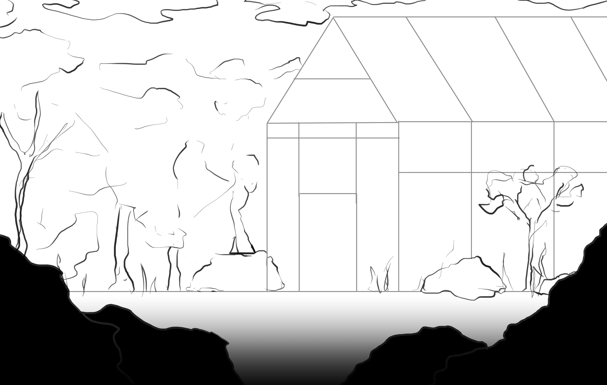
Music
The music's production is in tangent with the art and animation. The animatic was having major adjustments done this week,
and because of this, no new music was created.
Unity
WEEK 4
Weekly Goals
Animate Atlas walking in cutscene
Animate cemetery scene
Start the background art for cemetery in spring
Complete in-game greenhouse background and forest background (for cutscene)
Code being able to pick up object in Unity
Import walking and jumping animations into Unity for testing
The only things I did not accomplish this week were importing the jumping animation into Unity and completing the in-game greenhouse background.
I integrated the feedback I received by. I learned about background design and a bit about Unity. I also found a new resource that I will
talk about below in the Art & Animation section. I have been working non-stop on Monody, however life is chaotic and I lose a lot of time
from random things popping up. I also struggle with ADHD, which can be very debilitating.
Storytelling & Writing
Since the story is now finalized, major strides in the writing are no longer required. This week I brainstormed with
a couple of people to build upon the story that I have set and spent a little bit of time considering minor details that will enhance
the writing and experience. For example, I decided that the cutscene will show Atlas and their owner planting a special flower. Months
later, when Atlas returns to the greenhouse, that flower will still be alive, and it will be the reason Atlas ultimately begins restoring
the greenhouse. This element will provide emotional continuity for the viewer, as well as a more rounded story.
Art & Animation
This week was heavy with art and animation. The painted backgrounds below took a total of 3 hours. One of this week's goals was to animate
Atlas walking in the cutscene. It does not look like much, but this took a tremendous amount of time, especially since the timing of the
frames had to be readjusted occasionally.
A colored painting of the forest that will be seen in the opening cutscene
A black and white painting of the cemetery that will be seen in the opening cutscene
An amazing resource I found this week is a program called PureRef. It allows me to compile all of my references, concept art, and boards
for Monody in one place.
Music
Some work was done on already-existing music. Music for the cutscene will begin production on week 5.
Unity
I did a couple of hours of work in Unity this week. First off, I coded the ability for Atlas to pick up and drop items, as I want the
tutorial level to require this mechanic. It is not perfect, but it works and can be fine-tuned later. The other aspect I implemented was
the walking cycle animation whenever the player is moving. I was pleased to see that it looks good. There are a couple of unwanted
behaviors dealing with the animation (it does not stop immediately when the player stops moving), but that can and will be troubleshooted
in the future.
A video demonstrating the current Unity mechanics
WEEK 5
Weekly Goals
Create rough paintings for all backgrounds
Get references for human animation
Begin human animation
Create watering can and box sprites
Unfortunately, I did not get nearly as much done as I would like to this week. A combination of stress, burnout, and art block has impeded my ability
to work efficiently on my project, and I believe I need a little bit of help to get myself back on track.
Art & Animation
A majority of my work this week was spent painting backgrounds for my animation. I completely overhauled my forest background to make it more
interesting and engaging.
I also spent a bit of time creating references for animating Atlas's owner. I have embedded the videos I will be using as reference below.
Acting is not my strong suit, fortunately that does not matter too much, as I mostly need these as guidelines to make my animation as fluid and natural
as possible.
WEEK 6
Weekly Goals
Complete at least one background
Wednesday, January 21, 12:00pm-5:00pm
Saturday, January 24, 9:00am-3:00pm
Sunday, January 25, Any Time
Work on sketches for sprites, begin rough painting
Monday, January 19, 7:00pm-9:00pm
Import available temp sprites into Unity, position and size them
Sunday, January 25, 7:00pm-9:00pm
Import Atlas temporary jumping animation into Unity
Tuesday, January 20, 9:00am-10:00am
Work on idle plant animations
Thursday, January 22, Any Time
Begin animating human [sketch phase]
Tuesday, January 20, 2:00pm-7:00pm
Thursday, January 22, Any Time
I got a whole lot done this week and I am proud of myself. My time management was very good and I covered almost everything I wanted to get done.
Having time blocks for all of my goals helped my productivity, but I didn't follow them exactly.
The only thing I did not do this week was work on idle plant animations, which I have decided are low priority and I will make them if time permits.
Art & Animation
I worked on all the assets that I need for my deliverable. While they are not complete, I made good progress and the painting
process should not take too much time.
One of my goals for this week was to complete at least one background for the cutscene. While it is near-complete, I simply did not have
the time to do everything I wanted. However, it is close to being done, it just needs some cleaning up and I need to add shadows. Below
I have a comparison of what the forest background looked like last week and the current version.
Before
After
I sketched over 50 frames for the human's animation. It is not at a point where it is worth being shared, but below is simply proof that
I worked on the animation for Atlas's owner.
Music
HamRum has been working hard on the music for Monody. With an animatic that gives her a good idea of the exact timing and length of
the cutscene, she is able to structure the music and mood changes around it. However, this is a collaborative effort, and I have reminded
her several times that I am willing to adjust timing and scenes to make her job as easy as possible.
This is the second iteration for the beginning of the cutscene.
This is the first iteration for the grave scene. I told HamRum that it is a little too spooky for the vibes that I am going for,
so she is going to rework it.
Unity
The Unity portion of my project this week took a lot more time than anticipated, and it was pretty frustrating as a lot of time could
have been saved. I had fun and I learned a lot, but debugging was difficult and time consuming. Thankfully, I figured everything out
and so far it looks very good. I made a list of everything I accomplished in Unity this week.
Imported a temporary jumping animation
Fixed an issue where Atlas could jump indefinitely
Imported sprite textures
Imported new background
WEEK 7
Weekly Goals
Complete another background
Monday, January 26, 8:00pm-10:00pm
Tuesday, January 27, 6:00am-12:00pm
Finish sketching the animation frames for Atlas's owner
Tuesday, January 27, 2:00pm-5:00pm
Saturday, March 2
Sunday, March 3
Add tutorial text and responsive text in Unity
Wednesday, January 28, 4:00pm-8:00pm
Finish painting at least one sprite/asset
Thursday, January 29, 6:00am-12:00pm
Clean up Atlas walk and jump animations
Tuesday, January 27, 6:00am-12:00pm
Wednesdsay, January 28, 12:00pm-2:30pm
Saturdaym March 2
The only goal I did not touch upon this week was adding text in Unity. I am starting to feel the stress and pressure, and I'm well aware
that I need to start speeding things up and doing more every week. Things are still coming along though, and I hope that there are minimal
distractions this week for me to get as much done as possible. I share my progress with several people every week who give me feedback
on my work. I take all feedback into account going forward. One big thing I learned this week is that I cannot let my emotions distract me.
It was unexpected, but the current political turmoil has been largely distracting and stressful for me, preventing me from being as
productive as possible. I hope that I don't run into the same issue this week.
Art & Animation
I finished sketching all the animation frames for Atlas's owner. There is a total of 158 frames. This is what took the majority of my time
this week. Now, I can start finalizing the animation for Atlas's owner.
I completed my one goal of finishing at least one sprite/asset and it is ready to be imported into Unity.
These are the two backgrounds I worked on this week. I worked on the cemetery, but I also worked on the in-game greenhouse background, it is
a huge file as I want the player to be able to move around and explore the game.
WEEK 8
Weekly Goals
Begin cleaning up opening animation
Thursday, March 7, 6:00am-12:00pm (WITH BREAKS)
Saturday, March 9, All Day
Sunday, March 10, All Day
Complete another background
Monday, March 4, 8:00pm-11:00pm
Saturday, March 9, All Day
Sunday, March 10, All Day
Finish two sprites/assets
Tuesday, March 5, 8:00am-12:00pm
Wednesday, March 6, 6:00am-8:30am
Code the rest of tutorial into Unity
Tuesday, March 5, 2:00pm-7:00pm
Wednesday, March 6, 12:00pm-3:00pm
Screen record painting process
Test gameplay
I got 75% of the entire Unity game scripts complete. One thing I have to complete is the script for the tutorial text, which is almost done,
but cannot be seen because the text is not active in the live game scene. I also need to do some fine-tuning with object interactions.
I found a good way to cut down work for my animation and I am not stressed at all about the deadline for my project because I know I can
get it done within the time that I have. I have complete sprites and animations that are ready, but have not been implemented into the
Unity scene yet, which is why everything still looks very incomplete. My priority is getting everything functional. After I achieve that, I
will import all the final assets which will not take much time at all.
HX Testing Round II
Feedback: Sydney Herbison
The character tends to get stuck on the edges of platforms
The layout of the level could be more balanced
The difficulty of the level is good. The text should have some more content to more clearly hint at what the player needs to do
The text for the flowers has issues if someone clicks "E" multiple times in fast succession
Feedback: Ryver Zinkle
The difficulty of the level is perfect for the beginning of a game
The movement feels smooth and responsive
The game scene layout could be better
Art & Animation
As I said earlier, I found ways to cut down my work for the animation. Below is a clip of the scenes with Atlas's owner. While the
walking looks good, it is a little too fast, so that is a problem I need to solve this week.
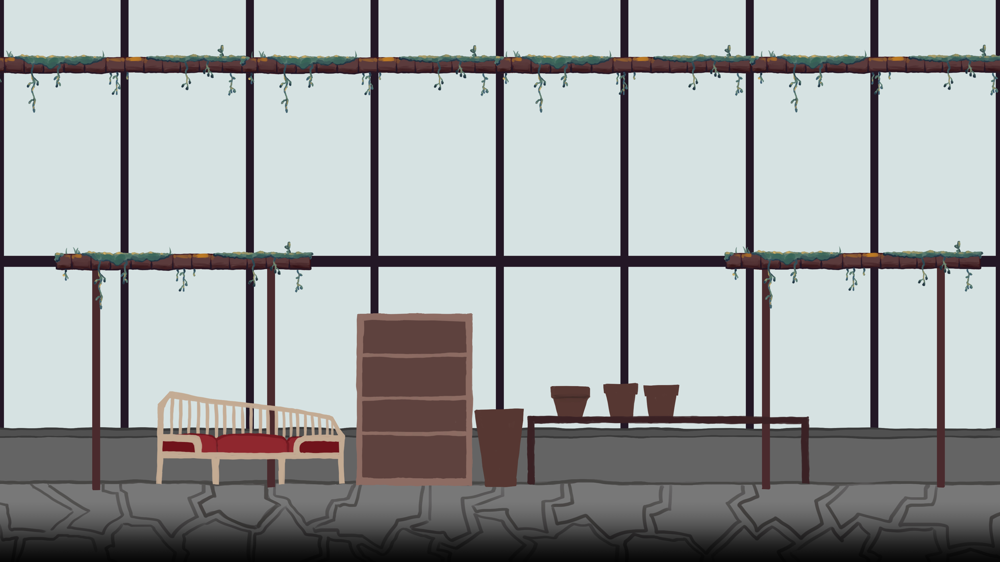
In-game greenhouse painting. Nearly complete.
Every component in the in-game greenhouse painting will be exported as an individual sprite. The scene will be rebuilt in Unity, so
the layout will likely be different from that shown above.
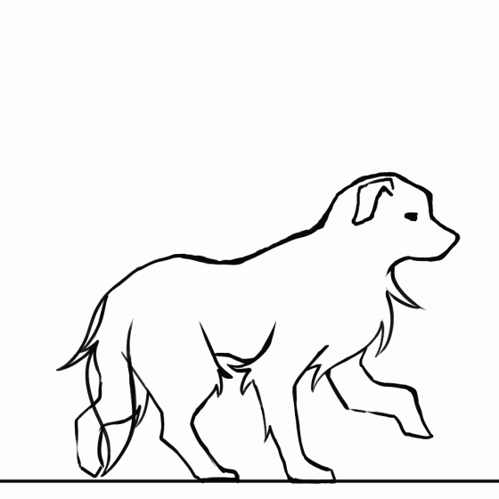
Clean frame animation for Atlas walking with their tail down
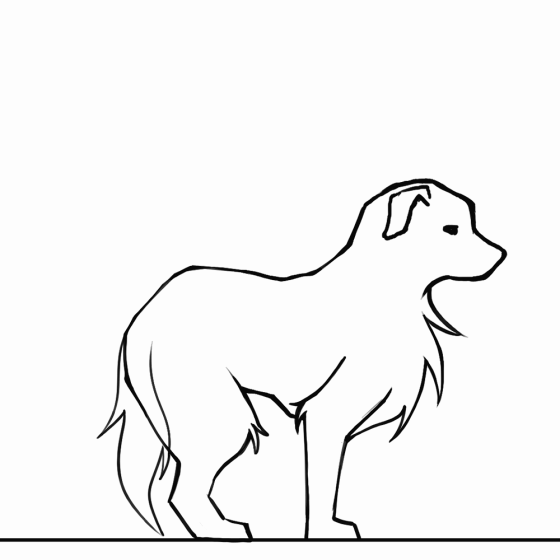
Clean frame animation for Atlas jumping with their tail down
Music
Some music has been completed this week. Sydney is well aware of the time limits and is doing a great job adapting the music to the
cutscene in terms of timing and vibes.
An iteration for the first scene in the animation. It is more upbeat and has a faster tempo. When Atlas
finds the grave, the music will change dramatically.
Unity
A majority of my time spent this week (around 13 hours) was in Unity and scripting my game scene. Below are a couple of videos, the first
shows the in-game level flow. The second is a small preview of the Unity scripts for Monody.
WEEK 9
Weekly Goals
Nearly complete all backgrounds and sprites
Monday, March 11, 8:00pm-10:00pm
Tuesday, March 12, All Day
Nearly complete coding for the game level
Wednesday, March 13, 12:00pm-5:00pm
Sunday, March 17, All Day
Clean up and finalize animations
Tuesday, March 12, All Day
Thursday, March 14, 2:00pm-7:00pm
Friday, March 15, All Day
Despite working so much on my Capstone this week I feel like I did not get enough done. As always, the process is long and hard, but I am learning
new things every week, whether it be for animation or Unity scripting. In all honesty, I did not expect to feel like I accomplished so little despite
working so much. I write down all the feedback I receive in case I want to touch upon it in the future. (Apologies for turning this weekly progress in late)
Art & Animation
Below is the current animation and other art that I worked on this week.
This week, Sydney completed the full track for the animation.
Unity
I did not get as much done in Unity as I wanted, but I did get things done. I also made big strides which will streamline the rest of the process.
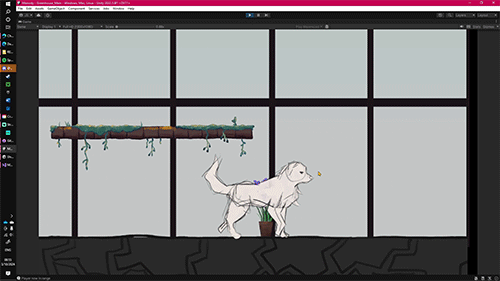
Text that appears if the flowers have not been watered: "You find a lone plant that is still alive. It looks like this plant can still be saved."
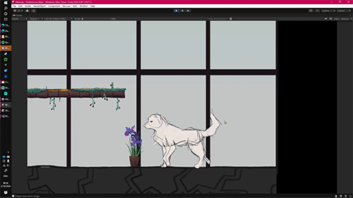
Text that appears if the player has the watering can and waters the flowers: "You watered the flowers."
WEEK 10
Weekly Goals
Nearly complete all backgrounds and sprites
Monday, March 11, 8:00pm-10:00pm
Tuesday, March 12, All Day
Nearly complete coding for the game level
Wednesday, March 13, 12:00pm-5:00pm
Sunday, March 17, All Day
Clean up and finalize animations
Tuesday, March 12, All Day
Thursday, March 14, 2:00pm-7:00pm
Friday, March 15, All Day
Week 10 was very slow in terms of progress. It was very difficult to be productive on my Capstone this week. I did accomplish things that
I wanted to, specifically with the game coding, which is 95% complete. I have one more thing to code into the game, and then the last thing
I need to do in Unity is import final assets and build the game level. I also did a little bit of work based off of the feedback I received
from the expert reviewers. One of my mentors, El Jors, was helping me rewrite an elevator pitch for Monody and also helping me create an
improved presentation structure for the future.
Art & Animation
I began cleaning up the animation for the cutscene. I expect that the animation should be fully complete in about 1-2 weeks at this point.
Originally, I had all the animation in one file. I changed this and split up the scenes into multiple files because it helps the animation
program run better.
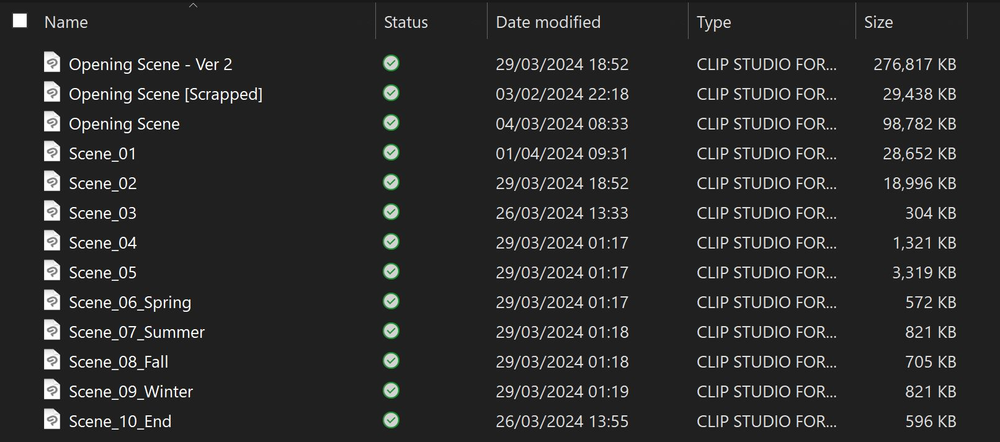
The files for my animation separated by scene
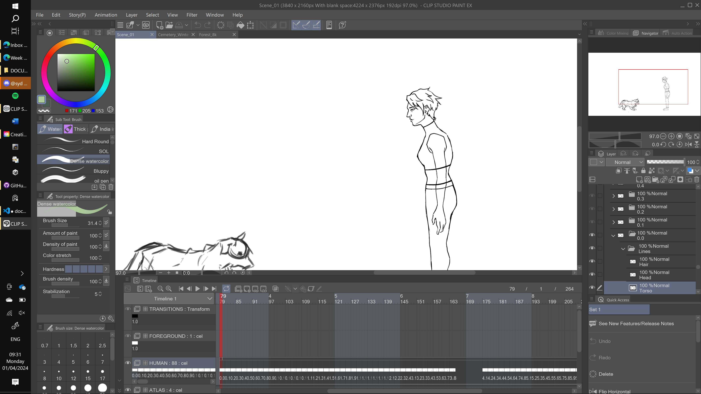
A preview of the clean version of Atlas's owner in the animation
I standardized the size of the backgrounds for consistency. With consistent sizing, it is easier to scale for the game and animation.
I made some coloring changes and added more trees to the forest. The image size has also been changed
Along with the canvas size change, minor changes have been made to the cemetery background.
Music
HamRum made some changes to the main theme music this week. She added a few parts, and enhanced the already-existing
theme with more sounds and layers. I told her that it would possibly fit better if it was slowed down a little bit.
Unity
The tutorial text pop-ups for in-game movement and interactions has been implemented and completed. The only thing left
to add to the game code is a confirmation screen when the player interacts with the couch and they are elibible to go to bed.
To better explain what game code has been implemented, I created a quick flow tree illustrating the flow of the game level.
A flow chart illustrating the gameplay level flow in Monody
This week I also imported the final animations for Atlas walking and jumping into Unity.
WEEK 11
Weekly Goals
Complete game scripts/code
Monday
Import final assets and build the game level in Unity
Saturday
Sunday
Work on backgrounds + Assets
Tuesday
Wednesday
Friday
Clean up and finalize animations
Tuesday
Wednesday
Thursday
Achieve a minimum viable product
RECORD ART PROCESSES
I made huge strides with my project this week. The animation is nearly complete, and the game code is completely finished. I have yet to build the level
environment into Unity, but hopefully that will not take too much time. As of now, I believe my project is ~92% complete.
Art & Animation
Unity
These are all the current assets that will be used for the game level.
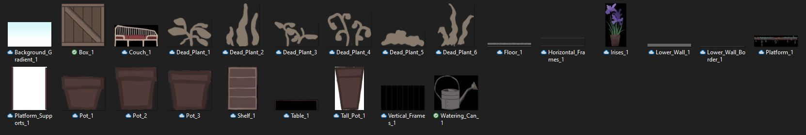
All of the game scripts are finally complete! The in-game movement, interactions, and dialogue are all completed and fine-tuned. Below is
a video demonstrating the full and functional game level.
MENTOR BLOGS | ROUND 1
Mentor Blog 1 | Megan Leahy
Megan Leahy is my mentor for my animation for Monody. She is an instructor at CU Boulder and she is currently my professor for motion design.
I have checked in with her to review my animatic. She suggested I make the scenes feel more lively by having silhouettes walking around in the background
during the town scene. She also suggested I added ambient animations to the stills that will be present in my cutscene. Even though the stills will not
be fully animated, I need to have movement and life present as it will feel out of place if the shots are entirely stagnant. I believe using a
combination of CSP and Adobe After Effects may be an effective and powerful way to combine tools to create a final cut that I am truly proud of.
Mentor Blog 2 | Ollie Oxenfree
I have been talking extensively with Ollie the past several weeks about Monody and its story. Ollie is a professional and creative writer, who is very
knowledgeable on the fundamentals of storytelling and narratives. The advice that Ollie has given me is extensive. When talking to him about Monody,
he wanted to make sure I have a clear idea of a couple of key things in my story:
What kind of story do I want to tell?
What is my message to the audience?
Almost all the advice that Ollie has given me revolves around these questions. I have also asked for general perspectives about writing and storytelling.
A small bit of their response to this is shown below.
A couple of weeks ago, I altered the story so that a light called out to Atlas that leads them to an abandoned greenhouse that they decide to restore.
Ollie warned that this route will tell a completely different story and will have implications that do not fit the scope of what I want Monody to be about.
While having a light calling out to Atlas would be an easy storytelling point, it is a cheap one. It is harder to write other ways for the story to go
but the payoff will be far more satisfying at the end of the story. With this feedback, I decided to go back to my original story idea, i.e. Atlas and their
owner had a garden that Atlas restores. I made some changes with CU faculty's criticisms in mind.
But as Ollie pointed out, this story route brings up another vital question: What is the final motivator for Atlas to overcome their depressive rut
and start taking care of the greenhouse again? Ollie had me brainstorm 3 possible story outcomes, which ended up looking like this:
Ultimately, I decided to go with the first idea. After the main crux of the story was handled, Ollie has since then helped me tighten my
narrative to make it stronger and more effective.
The screenshots shared in this blog post are merely a glimpse of the conversations I've had regarding
the storytelling for Monody. I have been working very hard in collaboration with others to bring Monody's story to its full fruition.
MENTOR BLOGS | ROUND 2
Mentor Blog 1 | El Jors
El Jors is an English major who has been giving me feedback for my Capstone project this entire time. They helped brainstorm a new elevator pitch along with
potential improvements I could make in future presentations. El's feedback for my background design was somewhat similar to the feedback from my other mentor.
They suggested that I more heavily emphasized decay and added more foliage to show the passage of time. Not only would it be more realistic, they pointed
out that it would add more character to the backgrounds, particularly the greenhouse, as a whole.
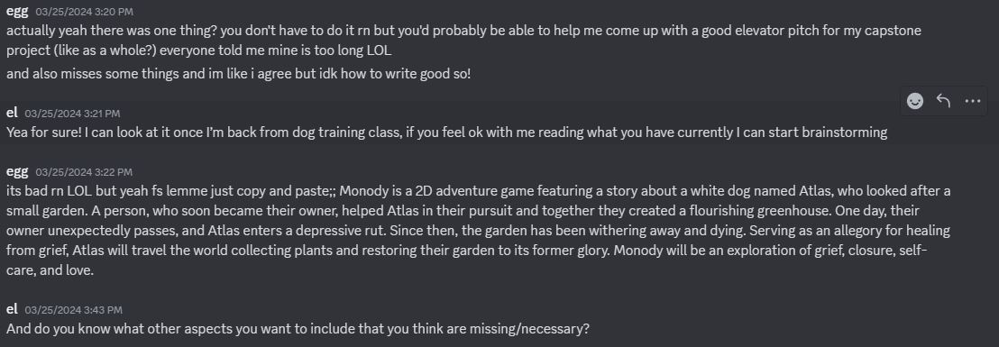
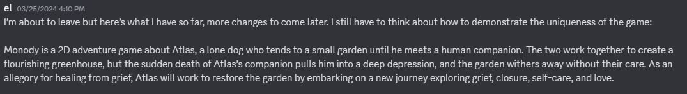
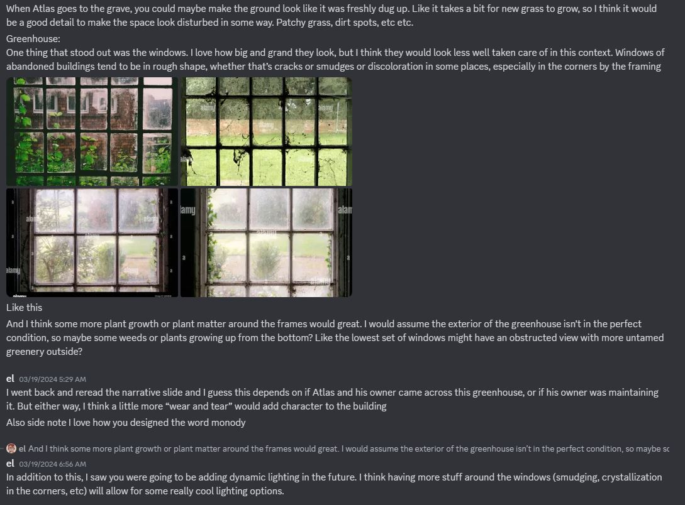
Mentor Blog 2 | Em Hummel
Em mainly gave me feedback on the background design for Monody and they gave me a variety of unique ideas to make my backgrounds more interesting
and dynamic. They told me that adding more foliage, decay, and extra minor details to my paintings would go a long way. They also helped me reference
other games, like Rain World, for title screen inspiration. Remembering to take inspiration from other works is honestly something that easily slips my mind,
but it's something I should do more.